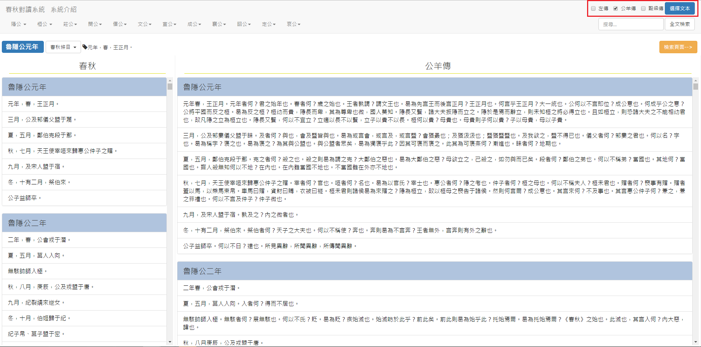
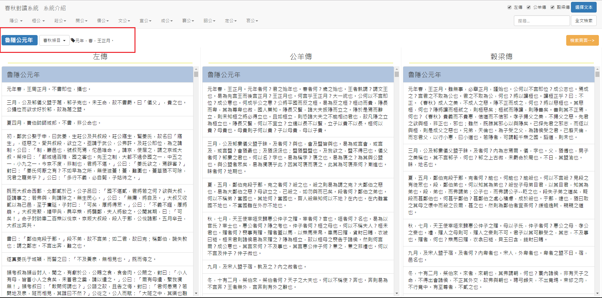
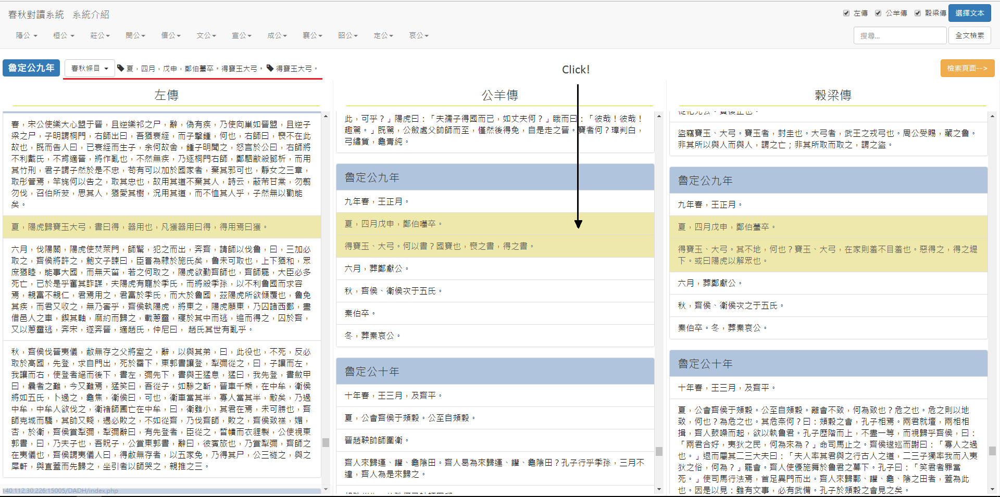

以簡單的範例讓各位快速了解此系統
本系統為春秋三傳對讀系統，以文本中的時間脈絡幫助使用者在春秋、左傳、公羊傳，穀梁傳做條目的對讀。
以下會簡單介紹本系統的功能 :
文本呈現方式
文本條目對應
全文檢索
本系統呈現文本的方式為垂直向下並搭配頁面滑軌讓使用者可以自行滑動至欲觀看的位置。
在系統頁面的右上角有一個選擇文本的按鈕，使用者可以自行選定欲對讀的文本，而春秋則為預設值。
下圖中以《春秋》與《公羊傳》為目標文本，紅框中為選擇文本的欄位，此處勾選的為公羊傳，也就是進行春秋與公羊傳的對讀。
當使用者所勾選的文本越多時，每分文本所分配到的空間也就越來越小，在這方面系統做的一定程度的取捨。
《春秋》條目精簡，三傳解釋《春秋》條目，可以將《春秋》的條目看成新聞的標題，而三傳解經的內容當作新聞的報導。
因此文本數量多時，選擇將《春秋》縮小致紅框框處，如下圖所示:。
此為本系統的主要功能，當使用者點選任一文本中的任一條目時，系統可以幫使用者對應在不同文本中相同時間的條目。
這邊以《公羊傳》定公九年四月的條目為例:
《春秋》魯定公九年:「夏，四月，戊申，鄭伯蠆卒。得寶玉大弓」。
《左傳》魯定公九年:「夏，陽虎歸寶玉大弓，書曰得，器用也，凡獲器用曰得，得用焉曰獲」。
《公羊傳》魯定公九年:「夏，四月戊申，鄭伯囆卒。得寶玉、大弓。何以書？國寶也，喪之書，得之書」。
《穀梁傳》魯定公九年:「夏，四月戊申，鄭伯蠆卒。得寶玉、大弓。其不地何也？寶玉、大弓在家則羞，不目羞也。惡得之？得之堤下。或曰，陽虎以解眾也」。
下圖中點選黑色箭頭的條目，可以看到系統會自動標出在其他文本之中相同時間所記載的條目，而被縮小的《春秋》，也就是紅線處的部份也會顯示著在《春秋》之中對應到的條目。
Cum sociis natoque penatibus et magnis dis parturient montes, nascetur ridiculus mus.
Example code blockAenean lacinia bibendum nulla sed consectetur. Etiam porta sem malesuada magna mollis euismod. Fusce dapibus, tellus ac cursus commodo, tortor mauris condimentum nibh, ut fermentum massa.
Cum sociis natoque penatibus et magnis dis parturient montes, nascetur ridiculus mus. Aenean lacinia bibendum nulla sed consectetur. Etiam porta sem malesuada magna mollis euismod. Fusce dapibus, tellus ac cursus commodo, tortor mauris condimentum nibh, ut fermentum massa justo sit amet risus.
Donec ullamcorper nulla non metus auctor fringilla. Nulla vitae elit libero, a pharetra augue.
Cras mattis consectetur purus sit amet fermentum. Sed posuere consectetur est at lobortis.
Cum sociis natoque penatibus et magnis dis parturient montes, nascetur ridiculus mus. Aenean eu leo quam. Pellentesque ornare sem lacinia quam venenatis vestibulum. Sed posuere consectetur est at lobortis. Cras mattis consectetur purus sit amet fermentum.
Curabitur blandit tempus porttitor. Nullam quis risus eget urna mollis ornare vel eu leo. Nullam id dolor id nibh ultricies vehicula ut id elit.
Etiam porta sem malesuada magna mollis euismod. Cras mattis consectetur purus sit amet fermentum. Aenean lacinia bibendum nulla sed consectetur.
Vivamus sagittis lacus vel augue laoreet rutrum faucibus dolor auctor. Duis mollis, est non commodo luctus, nisi erat porttitor ligula, eget lacinia odio sem nec elit. Morbi leo risus, porta ac consectetur ac, vestibulum at eros.
Cum sociis natoque penatibus et magnis dis parturient montes, nascetur ridiculus mus. Aenean lacinia bibendum nulla sed consectetur. Etiam porta sem malesuada magna mollis euismod. Fusce dapibus, tellus ac cursus commodo, tortor mauris condimentum nibh, ut fermentum massa justo sit amet risus.
Etiam porta sem malesuada magna mollis euismod. Cras mattis consectetur purus sit amet fermentum. Aenean lacinia bibendum nulla sed consectetur.
Donec ullamcorper nulla non metus auctor fringilla. Nulla vitae elit libero, a pharetra augue.